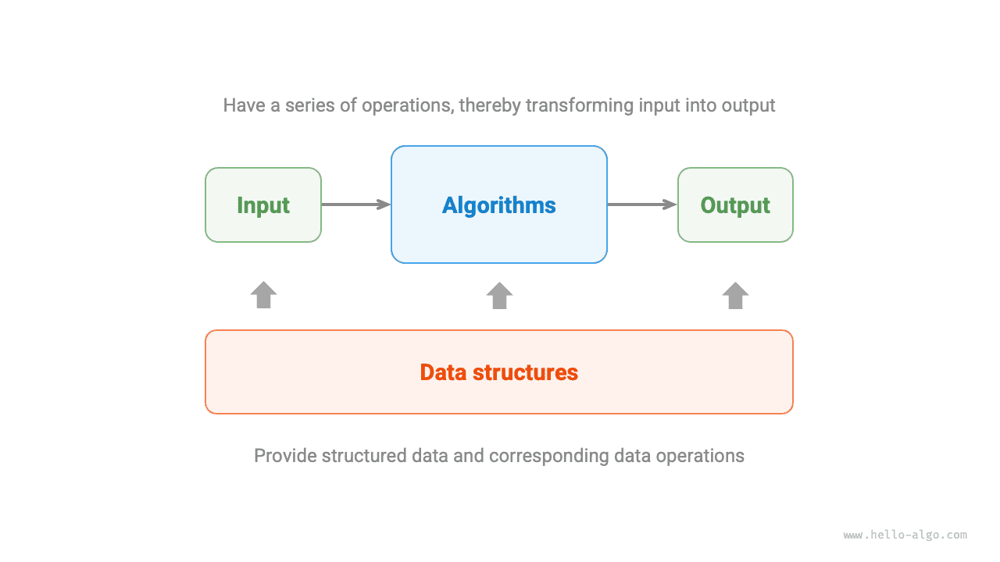

لقاء مع الخوارزميات
ما هي الخوارزمية
تعريف الخوارزمية
الخوارزمية (algorithm) مجموعة من التعليمات أو الخطوات التنفيذية التي تحل مسألة محددة خلال زمن منتهٍ. وتتميز بالخصائص التالية.
- تكون المسألة محددة تحديداً جيداً، بمدخلات ومخرجات واضحة.
- تكون قابلة للتنفيذ، ويمكن إنجازها بعدد محدود من الخطوات والزمن والذاكرة.
- يكون لكل خطوة معنى محدد، ويكون المخرج دائماً هو نفسه في ظل المدخلات وظروف التشغيل نفسها.
تعريف بنية البيانات
بنية البيانات (data structure) طريقة لتنظيم البيانات وتخزينها، وتشمل البيانات نفسها، والعلاقات بين عناصر البيانات، والأساليب المستخدمة في التعامل معها. ولها أهداف التصميم التالية.
- شغل أقل قدر ممكن من المساحة لتوفير ذاكرة الحاسوب.
- أن تكون عمليات البيانات أسرع ما يمكن، وتشمل الوصول إلى البيانات والإضافة والحذف والتحديث وغيرها.
- توفير تمثيل بيانات ومعلومات منطقية موجزة حتى تعمل الخوارزميات بكفاءة.
تصميم بنية البيانات عملية مليئة بالمقايضات. وإذا أردنا تحقيق تحسين في جانب ما، فغالباً ما نحتاج إلى تقديم تنازلات في جانب آخر. وفيما يلي مثالان.
- بالمقارنة مع المصفوفات، تكون القوائم المترابطة أكثر ملاءمة لعمليات إضافة البيانات وحذفها، لكنها تضحي بسرعة الوصول إلى البيانات.
- بالمقارنة مع القوائم المترابطة، توفر الرسوم البيانية معلومات منطقية أغنى، لكنها تتطلب مساحة ذاكرة أكبر.
العلاقة بين بنى البيانات والخوارزميات
كما يوضح الشكل أدناه، فإن بنى البيانات والخوارزميات شديدة الارتباط ومترابطة ارتباطاً وثيقاً، ويتجلى ذلك تحديداً في الجوانب الثلاثة التالية.
- بنى البيانات هي أساس الخوارزميات. إذ توفر بنى البيانات للخوارزميات تخزيناً منظماً للبيانات وأساليب للتعامل معها.
- الخوارزميات تبث الحياة في بنى البيانات. فبنى البيانات في ذاتها تخزن معلومات البيانات فقط، وعندما تقترن بالخوارزميات تستطيع حل مسائل محددة.
- يمكن عادةً تنفيذ الخوارزميات استناداً إلى بنى بيانات مختلفة، لكن كفاءة التنفيذ قد تتفاوت تفاوتاً كبيراً. واختيار بنية البيانات المناسبة هو المفتاح.

بنى البيانات والخوارزميات أشبه بتركيب مكعبات البناء كما في الشكل أدناه. فمجموعة مكعبات البناء، إضافة إلى احتوائها على قطع كثيرة، تأتي مصحوبة بتعليمات تركيب مفصلة. وباتباع التعليمات خطوة بخطوة، يمكننا تركيب نموذج مكعبات بديع.
ويوضح الجدول أدناه المقابلة التفصيلية بين الاثنين.
جدول
| بنى البيانات والخوارزميات | تركيب مكعبات البناء |
|---|---|
| بيانات الإدخال | مكعبات البناء غير المركّبة |
| بنية البيانات | شكل تنظيم مكعبات البناء، بما في ذلك الشكل والحجم وطريقة الربط وغيرها |
| الخوارزمية | سلسلة من الخطوات التنفيذية لتركيب المكعبات في الشكل الهدف |
| بيانات الإخراج | نموذج مكعبات البناء |
ومن الجدير بالذكر أن بنى البيانات والخوارزميات مستقلة عن لغات البرمجة. ولهذا السبب يمكن لهذا الكتاب أن يوفر تطبيقات بلغات برمجة متعددة.
اختصار اصطلاحي
في المناقشات الفعلية، نختصر عادةً «بنى البيانات والخوارزميات» بـ«الخوارزميات». وعلى سبيل المثال، فإن مسائل الخوارزميات الشهيرة على LeetCode تختبر في الواقع معرفة ببنى البيانات والخوارزميات معاً.